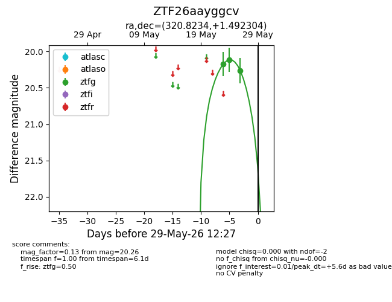
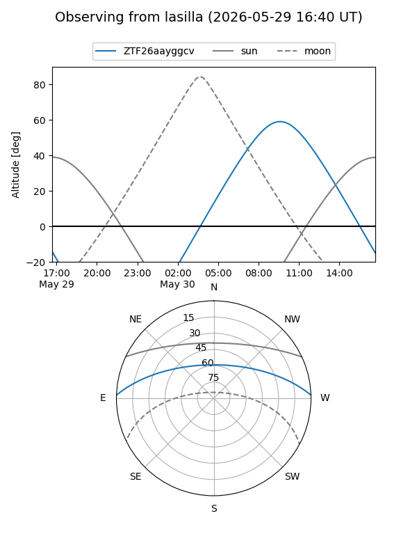
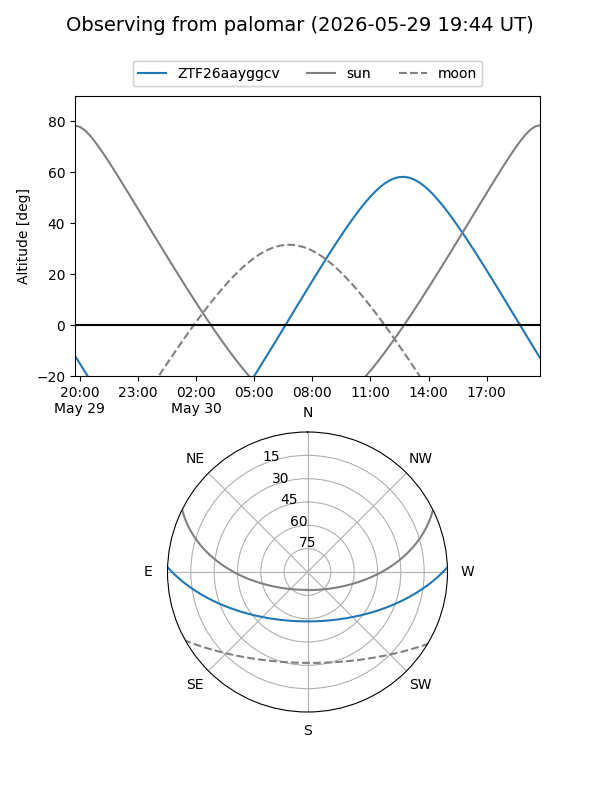
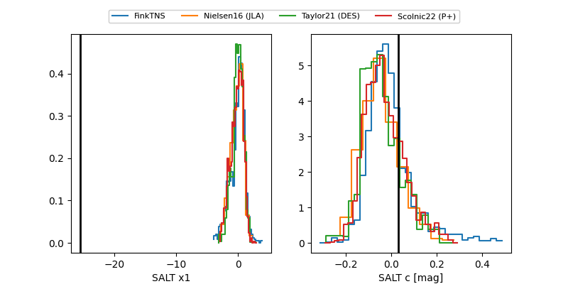

ZTF26aayggcv
Target ZTF26aayggcv at 2026-05-29 12:29
Aliases and brokers:
lsst-FINK: link
lsst-Lasair: link
lsst-ALeRCE: link
ztf-FINK: link
ztf-Lasair: link
ztf-ALeRCE: link
alt names
ZTF26aayggcv (ztf,fink_ztf)
Coordinates:
equatorial (ra, dec) = 320.8234,+1.49230
equatorial (HMS+DMS) = 21:23:17.62,+01:29:32.29
galactic (l, b) = (53.9986,-32.37302)
Flags:
Photometry:
last ztfg=20.26
3 ztfg detections
Lightcurve

Visibility


Additional plots
